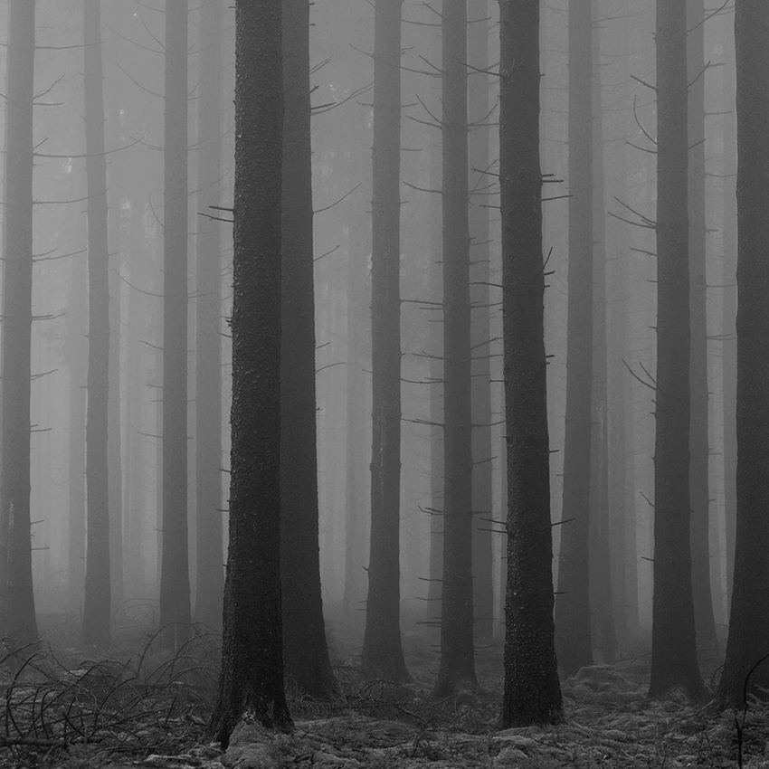
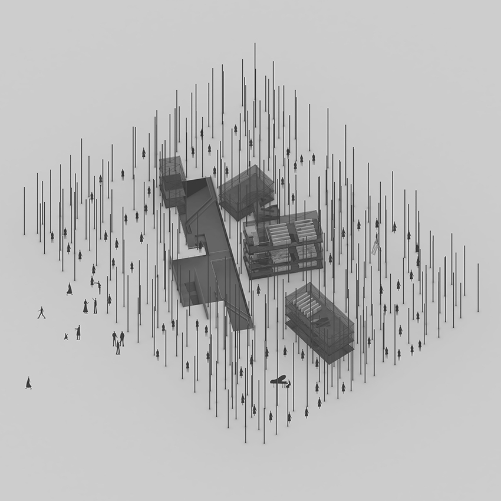
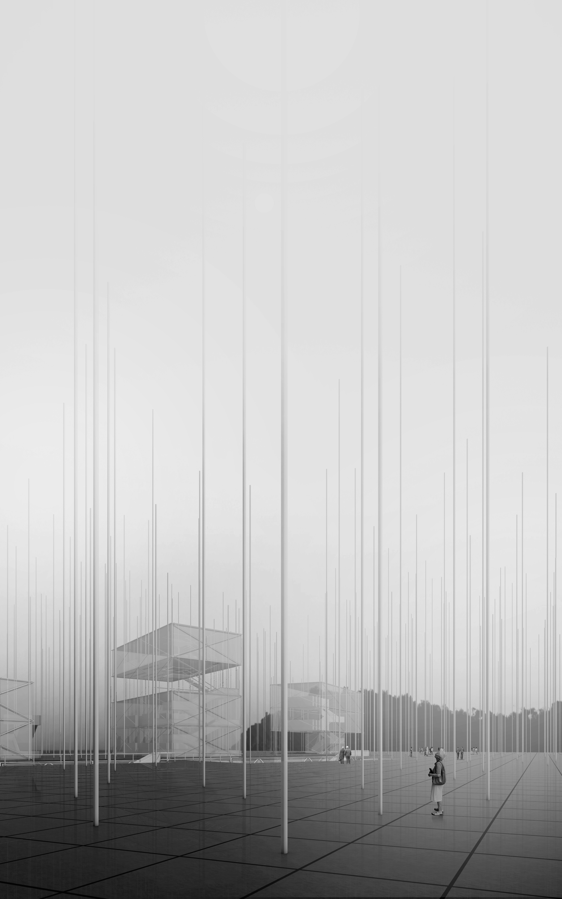
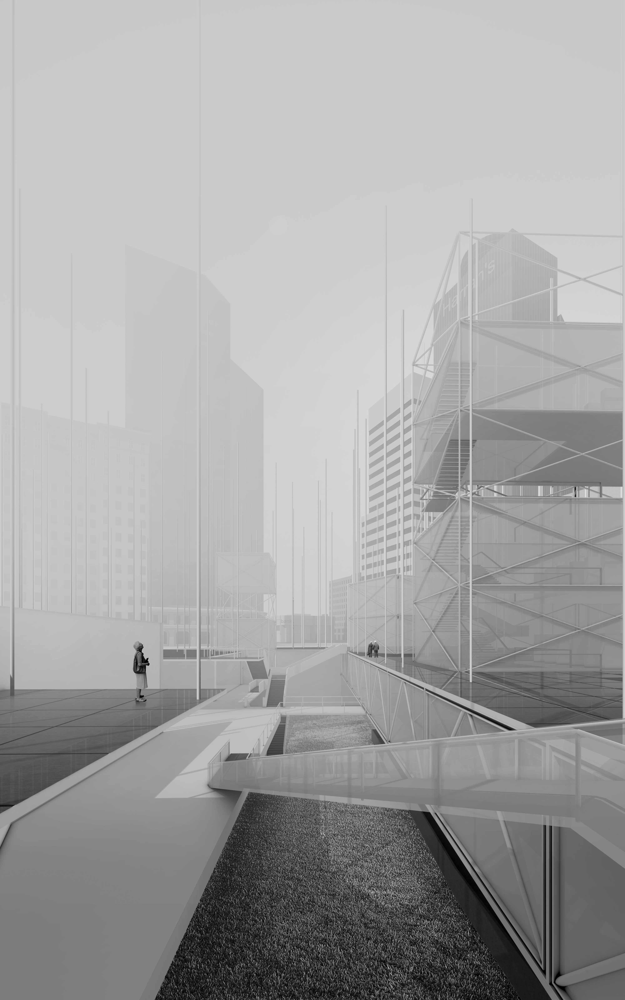
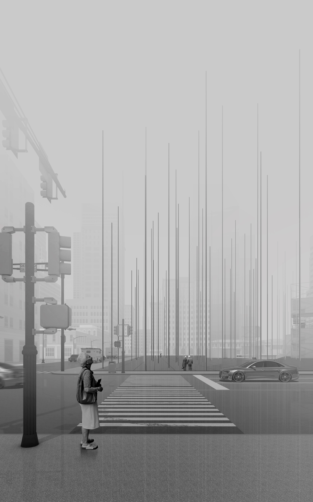

FINDING
Community Library Design
Site: PanJiaYuan, Chaoyang, Beijing, China

CONCEPTION
Making a abstraction of forest. The idea is made from Hiking. When people are hiking in forest, they are finding their specific position in a random tree layout according their own needs. Some people are finding places to read. Some people are finding places to have a lunch. Some people are finding places to have a rest as well. All seems to be random, but there must be one centain connecting between find a place and forest.


